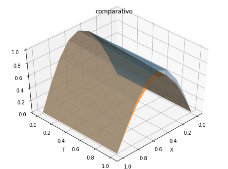
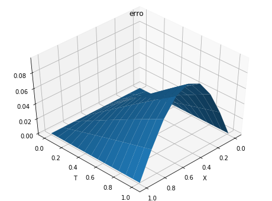

Método das Linhas¶
from numpy import *
import sympy as sy
import matplotlib.pyplot as plt
from mpl_toolkits.mplot3d.axes3d import Axes3D
O código abaixo usa o método de Euler explícito para resolver a EDP do calor unidimensional.
def met_linhas_euler(d0,d1,f,G,t0,T,h,m):
"""
Usa o metodo das linhas para resolver
ut = uxx + G(x,t), 0 < x < 1, 0 < t < T
com C.C.
u(0,t) = d0(t), u(1,t) = d1(t)
e C.I.
u(x,0) = f(x).
Usa o metodo de Euler para resolver o
sistema de EDOs. Para a discretizacao,
usa passo espacial delta = 1/m e passo
temporal h. Para estabilidade numérica,
usa h = 1/(2*m**2) ou menor.
"""
x = linspace(0,1,m+1)
delta = 1/m
delta_sqr = delta**2
N = round((T - t0)/h) + 1
t = linspace(t0,(N-1)*h,N)
# inicializa u
u = zeros((m+1,N))
# construir vetores, se funcao constante
if isinstance(d0,float):
d0 = d0*ones(N)
u[0,:] = d0
else:
u[0,:] = d0(t)
if isinstance(d1,float):
d1 = d1*ones(N)
u[m,:] = d1
else:
u[m,:] = d1(t)
if isinstance(f,float):
f = f*ones(N)
u[:,0] = f
else:
u[:,0] = f(x)
# Resolve para u usando Euler
for n in range(1,N):
g = G(x[1:m-1],t[n-1])
u[1:m,n] = u[1:m,n-1] + (h/delta_sqr)*(u[0:(m-1),n])
- 2*u[1:m-1,n-1] + u[2:m,n-1] + h*g
return x,t,u
A solução exata para a EDP é \(u(x,t) = \exp(-0.1t){\rm sen}(\pi x)\). A partir desta função obteremos todos os demais termos da EDP. Abaixo, encontraremos as derivadas parciais em relação ao tempo e ao espaço.
# u(x,t) = exp(-0.1*t)*sin(pi*x)
# variaveis simbólicas
xsym,tsym = sy.symbols('x,t')
# u(x,t)
u = sy.exp(-0.1*tsym)*sy.sin(sy.pi*xsym)
# dudt
dudt = sy.diff(u,tsym)
# d2udx2
d2udx2 = sy.diff(u,xsym,2)
# G(x,t)
Gxt = dudt - d2udx2
print(Gxt)
-0.1*exp(-0.1*t)*sin(pi*x) + pi**2*exp(-0.1*t)*sin(pi*x)
# d0 = u(0,t) = 0
# d1 = u(1,t) = 0
# f = sin(pi*x)
# -0.1*exp(-0.1*t)*sin(pi*x) + pi**2*exp(-0.1*t)*sin(pi*x)
d0 = 0.0
d1 = 0.0
f = lambda x: sin(pi*x)
G = lambda x,t: -0.1*exp(-0.1*t)*sin(pi*x) + pi**2*exp(-0.1*t)*sin(pi*x)
t0 = 0.0
T = 1.0
h = 0.078
m = 8
# sol. numerica
x,t,un = met_linhas_euler(d0,d1,f,G,t0,T,h,m)
TT,X = meshgrid(t,x)
# sol. exata
ue = exp(-0.1*TT)*sin(pi*X)
# plotagem
fig = plt.figure(figsize=(8,6))
ax = fig.add_subplot(1,1,1, projection='3d')
ax.plot_surface(X, TT, un, alpha=0.4)
ax.plot_surface(X, TT, ue, alpha=0.7)
plt.xlabel('X')
plt.ylabel('T')
plt.title('comparativo')
ax.view_init(45, 45)

fig = plt.figure(figsize=(8,6))
ax = fig.add_subplot(1,1,1, projection='3d')
ax.plot_surface(X, TT, abs(ue-un), alpha=1.)
plt.xlabel('X')
plt.ylabel('T')
plt.title('erro')
ax.view_init(45, 45)
